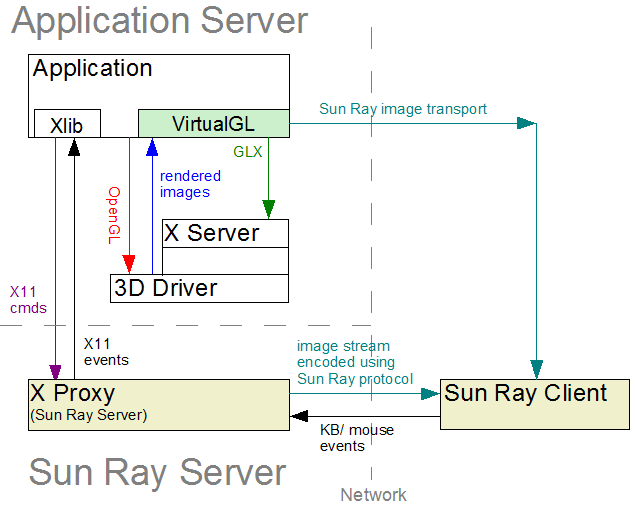
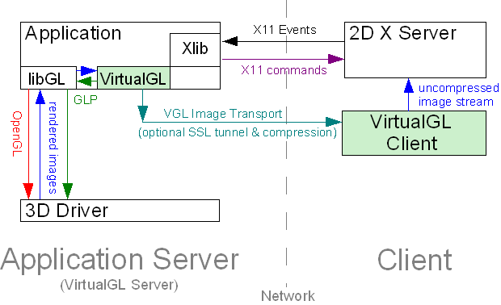
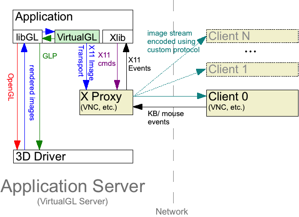
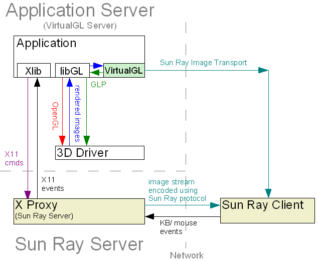
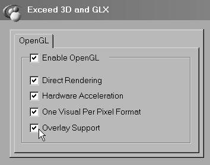

User’s Guide for VirtualGL 2.1.4
Intended audience: System Administrators, Graphics Programmers, Researchers, and others with knowledge of the Linux or Solaris operating systems, OpenGL and GLX, and X windows.
This document and all associated illustrations are licensed under the Creative Commons Attribution 2.5 License. Any works which contain material derived from this document must cite The VirtualGL Project as the source of the material and list the current URL for the VirtualGL web site.
This product includes software developed by the
OpenSSL
Project for use in the OpenSSL Toolkit.
Further information is contained in
LICENSE-OpenSSL.txt,
which can be found in the same directory as this documentation.
The VirtualGL server components include software developed by the FLTK Project and distributed under the terms of the FLTK License.
The VirtualGL Windows packages include PuTTY, which is released under this license.
VirtualGL includes portions of X.org, which is released under this license.
VirtualGL is licensed under the wxWindows Library License, v3.1, a derivative of the GNU Lesser General Public License (LGPL).
VirtualGL is an open source package which gives any Unix or Linux remote display software the ability to run OpenGL applications with full 3D hardware acceleration. Some remote display software, such as VNC, lacks the ability to run OpenGL applications at all. Other remote display software forces OpenGL applications to use a slow software-only OpenGL renderer, to the detriment of performance as well as compatibility. The traditional method of displaying OpenGL applications to a remote X server (indirect rendering) supports 3D hardware acceleration, but this approach causes all of the OpenGL commands and 3D data to be sent over the network to be rendered on the client machine. This is not a tenable proposition unless the data is relatively small and static, unless the network is very fast, and unless the OpenGL application is specifically tuned for a remote X-Windows environment.
With VirtualGL, the OpenGL commands and 3D data are instead redirected to a 3D graphics accelerator on the application server, and only the rendered 3D images are sent to the client machine. VirtualGL thus “virtualizes” 3D graphics hardware, allowing it to be co-located in the “cold room” with compute and storage resources. VirtualGL also allows 3D graphics hardware to be shared among multiple users, and it provides “workstation-like” levels of performance on even the most modest of networks. This makes it possible for large, noisy, hot 3D workstations to be replaced with laptops or even thinner clients. More importantly, however, VirtualGL eliminates the workstation and the network as barriers to data size. Users can now visualize gigabytes and gigabytes of data in real time without needing to copy any of the data over the network or sit in front of the machine that is rendering the data.
Normally, a Unix OpenGL application would send all of its drawing commands and data, both 2D and 3D, to an X-Windows server, which may be located across the network from the application server. VirtualGL, however, employs a technique called “split rendering” to force the 3D commands from the application to go to a 3D graphics card in the application server. VGL accomplishes this by pre-loading a dynamic shared object (DSO) into the application at run time. This DSO intercepts a handful of GLX, OpenGL, and X11 commands necessary to perform split rendering. Whenever a window is created by the application, VirtualGL creates a corresponding 3D pixel buffer (“Pbuffer”) on a 3D graphics card in the application server. Whenever the application requests that an OpenGL rendering context be created for the window, VirtualGL intercepts the request and creates the context on the corresponding Pbuffer instead. Whenever the application swaps or flushes the drawing buffer to indicate that it has finished rendering a frame, VirtualGL reads back the Pbuffer and sends the rendered 3D image to the client.
The beauty of this approach is its non-intrusiveness. VirtualGL monitors a few X11 commands and events to determine when windows have been resized, etc., but it does not interfere in any way with the delivery of 2D X11 commands to the X server. For the most part, VGL does not interfere with the delivery of OpenGL commands to the graphics card, either (there are some exceptions, such as its handling of color index rendering.) VGL merely forces the OpenGL commands to be delivered to a server-side graphics card rather than a client-side graphics card. Once the OpenGL rendering context has been established in a server-side Pbuffer, everything (including esoteric OpenGL extensions, fragment/vertex programs, etc.) should “just work.” In most cases, if an application runs locally on a 3D server/workstation, that same application will run remotely from that same machine using VirtualGL. However, if it were really as simple as that, we could all turn out the lights and go home. Most of the time spent developing VirtualGL has been spent working around “stupid application tricks.”
VirtualGL can currently use one of three “image transports” to send rendered 3D images to the client machine:
Figure 2.1: The VGL Image Transport with a Remote 2D X Server

Figure 2.2: The X11 Image Transport with an X Proxy

Figure 2.3: The Sun Ray Image Transport
| Server (x86) | Server (x86-64) | Client | |
|---|---|---|---|
| Recommended CPU | Pentium 4, 1.7 GHz or faster (or equivalent)
|
Pentium 4/Xeon with EM64T, or… AMD Opteron or Athlon64, 1.8 GHz or faster
|
Pentium III or Pentium 4, 1.0 GHz or faster (or equivalent) |
| Graphics | Any decent 3D graphics card that supports Pbuffers
|
Any graphics card with decent 2D performance
|
|
| Recommended O/S | |||
| Other Software | X server configured to export True Color (24-bit or 32-bit) visuals | ||
VirtualGL should build and run on Itanium Linux, but it has not been thoroughly tested. Contact us if you encounter any difficulties. A pre-built TurboJPEG binary package is not available for Linux/Itanium, so it will be necessary to build TurboJPEG from source using the Intel Integrated Performance Primitives for Itanium processors.
| Server | Client | ||
|---|---|---|---|
| Recommended CPU | Pentium 4/Xeon with EM64T, or… AMD Opteron or Athlon64, 1.8 GHz or faster
|
Pentium III or Pentium 4, 1.0 GHz or faster (or equivalent) | |
| Graphics | nVidia 3D graphics card | Any graphics card with decent 2D performance | |
| O/S |
|
||
| Other Software |
|
|
|
* mediaLib 2.5 is included in Solaris 10 update 4 and newer. If you are running an older version of Solaris, it is recommended that you download and install the mediaLib 2.5 upgrade from the link above. mediaLib 2.5 improves the performance of VirtualGL significantly on Solaris/x86 systems, when compared to mediaLib 2.4.
| Server | Client | |
|---|---|---|
| Recommended CPU | UltraSPARC III 900 MHz or faster
|
UltraSPARC III 900 MHz or faster |
| Graphics | Any decent 3D graphics card that supports Pbuffers | Any graphics card with decent 2D performance |
| O/S |
|
|
| Other Software |
|
|
| Client | |
|---|---|
| Recommended CPU | Any Intel-based Mac |
| O/S | OS X 10.4 (“Tiger”) or later |
| Other Software |
|
| Client | |
|---|---|
| Recommended CPU | Pentium III or Pentium 4, 1.0 GHz or faster (or equivalent) |
| Graphics | Any graphics card with decent 2D performance |
| O/S | Windows 2000 or later |
| Other Software |
|
The client requirements do not apply to anaglyphic stereo. See Chapter 14 for more details.
| Server | Client | |
|---|---|---|
| Linux | 3D graphics card that supports stereo (example: nVidia Quadro, ATI FirePro) and is configured to export stereo visuals | |
| Solaris/x86 | ||
| Mac/x86 | N/A | 3D graphics card that supports stereo (example: nVidia Quadro) and is configured to export stereo visuals |
| Solaris/SPARC |
|
|
| Windows | N/A |
|
| Client | |
|---|---|
| Linux | 3D graphics card that supports transparent overlays (example: nVidia Quadro, ATI FirePro) and is configured to export overlay visuals |
| Solaris/x86 | |
| Mac/x86 | |
| Solaris/SPARC |
|
| Windows |
|
VirtualGL must be installed on any machine that will act as a VirtualGL server or as a client for the VGL Image Transport. It is not necessary to install VirtualGL on the client machine if using VNC or another type of X proxy.
The “i386” RPM and DEB packages are for 32-bit-only systems. The “x86_64” RPM and “amd64” DEB packages are for 64-bit systems. The 64-bit packages contain both 32-bit and 64-bit libraries.
rpm -U turbojpeg*.rpm
dpkg -i turbojpeg*.deb
The “i386” RPM and DEB packages are for 32-bit-only systems. The “x86_64” RPM and “amd64” DEB packages are for 64-bit systems. The 64-bit packages contain both 32-bit and 64-bit VirtualGL components.
rpm -e VirtualGL rpm -i VirtualGL*.rpm
dpkg -r VirtualGL dpkg -i VirtualGL*.deb
SUNWvgl-{version}.pkg.bz2
for SPARC or
SUNWvgl-{version}-x86.pkg.bz2
for x86) from the
Files
area of the
VirtualGL
SourceForge web-site. Both packages provide both 32-bit and 64-bit VirtualGL components.
pkgrm SUNWvgl(answer “Y” when prompted.)
bzip2 -d SUNWvgl-{version}.pkg.bz2
pkgadd -d SUNWvgl-{version}.pkg
Select the SUNWvgl package (usually option 1) from the menu.
VirtualGL for Solaris installs into /opt/SUNWvgl.
VirtualGL-{version}.dmg)
from the
Files
area of the
VirtualGL
SourceForge web-site.
VirtualGL-{version}.pkg
inside the disk image. Follow the instructions to install the Mac
client. The Mac package installs files in the same locations as the
Linux packages.
VirtualGL-{version}.exe)
from the
Files
area of the
VirtualGL
SourceForge web-site.
NOTE: The VirtualGL Windows installer does not remove any previous versions of VirtualGL that may be installed on your machine. If you wish, you can remove these older versions manually by using the “Add or Remove Programs” applet in the Control Panel (or the “Programs and Features” applet if you are running Vista.)
If you are using a platform for which there is not a pre-built VirtualGL
binary package available, then log in as root, download the VirtualGL
source tarball
(VirtualGL-{version}.tar.gz)
from the
Files
area of the
VirtualGL
SourceForge web-site, uncompress it,
cd vgl, and read the contents of
BUILDING.txt for further instructions on how to build and
install VirtualGL from source.
The VirtualGL Sun Ray plugin is a proprietary add-on developed by Sun
Microsystems to integrate VirtualGL with the Sun Ray thin client
environment. This plugin was part of the Sun Shared Visualization
product, which is now EOL. However, the packages
(VirtualGL-SunRay.i386.rpm and
VirtualGL-SunRay.x86_64.rpm for Linux systems, and
SUNWvglsr for Solaris systems) can be obtained from the Sun
Shared Visualization 1.1.1 distribution, which, as of this writing, is
still available for download from the
Sun
Download Center.
As root, issue one of the following commands:
rpm -e VirtualGL
dpkg -r VirtualGL
As root, issue the following command:
pkgrm SUNWvgl
Answer “yes” when prompted.
Use the “Uninstall VirtualGL” application provided in the VirtualGL disk image, or issue the following command from the Terminal:
sudo /opt/VirtualGL/bin/uninstall
Use the “Add or Remove Programs” applet in the Control Panel (or the “Programs and Features” applet if you’re running Vista.)
Sun’s OpenGL library for Solaris/SPARC systems has a special extension called “GLP” which allows VirtualGL to directly access a 3D graphics card even if there is no X server running on the card. GLP greatly improves the overall security of the VirtualGL server, since it eliminates the need to grant VirtualGL users access to the 3D X server running on that machine. In addition, GLP makes it easy to assign VirtualGL jobs to any graphics card in a multi-card system.
When using GLP, the architecture of VirtualGL changes as follows:
Figure 5.1: The VGL Image Transport with a Remote 2D X Server and GLP
Figure 5.2: The X11 Image Transport with an X Proxy and GLP
Figure 5.3: The Sun Ray Image Transport with GLP
If the application server is running Sun OpenGL 1.5 for Solaris/SPARC, then it is recommended that you configure it to use GLP:
/opt/VirtualGL/bin/vglserver_config
Configure server for use with VirtualGL in GLP mode.)
Restrict framebuffer device access to vglusers group (recommended)? [Y/n]
vglusers group can run OpenGL
applications on the VirtualGL server (the configuration script will
create the vglusers group if it doesn’t already
exist.) This limits the possibility that an unauthorized user could
snoop the 3D framebuffer device(s) and thus see (or alter) the output of
a 3D application that is being used with VirtualGL.
vglusers group to log in locally to this server and run
OpenGL applications, then this option must be selected.
vglusers group, then edit /etc/group and add
root to the vglusers group. If you choose,
you can also add additional users to the group at this time. Note that
any user you add to vglusers must log out and back in again
before their new group permissions will take effect.
/etc/dt/config/GraphicsDevices file as necessary.
This file contains a list of paths to 3D framebuffer devices (such as
/dev/fbs/kfb0, /dev/fbs/jfb0, etc.) that you
wish to use with VirtualGL.
To verify that the application server is ready to run VirtualGL, log out of the server, log back into the server using SSh, and execute the following command in the SSh session:
/opt/VirtualGL/bin/glxinfo -d glp
This command should output a list of visuals and should complete with no errors.
If you wish VirtualGL to use GLP by default, then you can add
VGL_DISPLAY=glp export VGL_DISPLAY
to /etc/profile on the application server. This will cause
VirtualGL to use the first device specified in
/etc/dt/config/GraphicsDevices as the default rendering
device. Users can override this default by setting
VGL_DISPLAY in one of their startup scripts (such as
~/.profile or ~/.login) or by passing an
argument of -d <device> to vglrun
when invoking VirtualGL. See Chapter
17 for more details.
If you plan to use VirtualGL only with GLP, then you can skip this section.
VirtualGL requires access to the application server’s 3D graphics card so that it can create off-screen pixel buffers (Pbuffers) and redirect the 3D rendering from applications into these Pbuffers. Unfortunately, accessing a 3D graphics card on Linux and Solaris/x86 systems or on Solaris/SPARC systems without GLP requires going through an X server. On such systems, the only way to share the application server’s 3D graphics card among multiple users is to grant those users access to the 3D X server (the X server attached to the application server’s 3D graphics card. Refer to the figures in Chapter 2.)
It is important to understand the security risks associated with this.
Once a user has access to the 3D X server, there is nothing that would
prevent the user from logging keystrokes or reading back images from
that X server. Using xauth, one can obtain
“untrusted” X authentication keys which prevent such
exploits, but unfortunately, those untrusted keys also disallow access
to the 3D hardware. Thus, it is necessary to grant full trusted access
to the 3D X server for any users that will need to run VirtualGL.
Unless you fully trust the users to whom you are granting this access,
then you should avoid logging in locally to the 3D X server
(particularly as root) unless absolutely necessary.
This section will explain how to configure a VirtualGL server such that selected users can run VirtualGL, even if the server is sitting at the login prompt.
/etc/init.d/gdm stop
init 3
svcadm disable gdm2-login
svcadm disable gdm
/etc/init.d/dtlogin stop
/opt/VirtualGL/bin/vglserver_config
Configure server for use with VirtualGL in GLX mode.)
Restrict local X server access to vglusers group (recommended)? [Y/n]
vglusers group can use VirtualGL (the
configuration script will create the vglusers group if it
doesn’t already exist.) This is the most secure option, since it
prevents any users outside of the vglusers group from
accessing (and thus exploiting) the 3D X server.
Restrict framebuffer device access to vglusers group (recommended)? [Y/n]
vglusers group can run OpenGL
applications on the VirtualGL server (the configuration script will
create the vglusers group if it doesn’t already
exist.) This limits the possibility that an unauthorized user could
snoop the 3D framebuffer device(s) and thus see (or alter) the output of
a 3D application that is being used with VirtualGL.
vglusers group to log in locally to this server and run
OpenGL applications, then this option must be selected.
Disable XTEST extension (recommended)? [Y/n]
On certain Linux distributions, it may be necessary to run gdmsetup first in order to create the X server command line entries in the GDM configuration file. Until these command line entries have been created, disabling XTEST using vglserver_config will not work. This is known to be necessary for openSUSE 10 and Enterprise Linux 5.
x11vnc and x0vncserver both require XTEST, so
if you need to attach a VNC server to the 3D X server, then it is
necessary to answer “No” (and thus leave XTEST enabled.)
vglusers group, then edit /etc/group and add
root to the vglusers group. If you choose,
you can also add additional users to the group at this time. Note that
any user you add to vglusers must log out and back in again
before their new group permissions will take effect.
/etc/init.d/gdm start
init 5
svcadm enable gdm2-login
svcadm enable gdm
/etc/init.d/dtlogin start
To verify that the application server is ready to run VirtualGL, log out of the server, log back into the server using SSh, and execute the following commands in the SSh session:
vglusersxauth merge /etc/opt/VirtualGL/vgl_xauth_key xdpyinfo -display :0 /opt/VirtualGL/bin/glxinfo -display :0
NOTE: xauth and xdpyinfo are in /usr/openwin/bin on Solaris systems.
xdpyinfo -display :0 /opt/VirtualGL/bin/glxinfo -display :0
Both commands should output a list of visuals and should complete with
no errors. If you chose to disable the XTEST extension, then check the
output of xdpyinfo to verify that XTEST does
not show up in the list of extensions.
The application server’s SSh daemon should have the
X11Forwarding option enabled and the UseLogin
option disabled. This is configured in sshd_config, the
location of which varies depending on your distribution of SSh. Linux,
Solaris 10+, and OpenSolaris systems generally keep this in
/etc/ssh, whereas Blastwave OpenSSh keeps it in
/opt/csw/etc and SunFreeware OpenSSh keeps it in
/usr/local/etc.
You can use the vglserver_config script to restore the
security settings that were in place before VirtualGL was installed.
Option 2
(Unconfigure server for use with VirtualGL in GLX mode)
will remove any shared access to the 3D X server and thus prevent
VirtualGL from accessing the 3D hardware in that manner. Option 2 will
also re-enable the XTEST extension on the 3D X server. Both Option 2
and Option 4
(Unconfigure server for use with VirtualGL in GLP mode)
will restore the framebuffer device permissions to their default (by
default, only root or the user that is currently logged into the
application server locally can access the framebuffer devices.)
NOTE: Unconfiguring the server does not remove the vglusers group or the /etc/dt/config/GraphicsDevices file.
After selecting Option 2, you must restart the display manager before the changes will take effect.
C:\Program Files\Hummingbird\Connectivity\9.00\Exceed)
to the system PATH environment if it isn’t already
there.
If you are using the “Classic View” mode of XConfig, open the “Protocol” applet instead.
If you are using the “Classic View” mode of XConfig, open the “Performance” applet instead.
VirtualGL has the ability to take advantage of the MIT-SHM extension in Hummingbird Exceed to accelerate image drawing on Windows. This can improve the overall performance of the VirtualGL pipeline by as much as 20% in some cases.
The bad news is that this extension is not consistently implemented across all versions of Exceed. In particular, Exceed 8, Exceed 9, and Exceed 2008 require patches to make it work properly. If you are using one of these versions of Exceed, you will need to obtain the following patches from the Hummingbird support site:
| Product | Patches Required | How to Obtain |
|---|---|---|
| Hummingbird Exceed 8.0 | hclshm.dll v9.0.0.1 (or higher)xlib.dll v9.0.0.3 (or higher)exceed.exe v8.0.0.28 (or higher) |
Download all patches from the Hummingbird support site. (Hummingbird WebSupport account required) |
| Hummingbird Exceed 9.0 | hclshm.dll v9.0.0.1 (or higher)xlib.dll v9.0.0.3 (or higher)exceed.exe v9.0.0.9 (or higher) |
exceed.exe can be patched by running Hummingbird Update.All other patches must be downloaded from the Hummingbird support site. (Hummingbird WebSupport account required) |
| Hummingbird Exceed 2008 | xlib.dll v13.0.1.235 (or higher)(or install the latest Connectivity 2008 Service Pack.) |
Download all patches from the Hummingbird support site. (Hummingbird WebSupport account required) |
No patches should be necessary for Exceed 10, 2006, or 2007.
Next, you need to enable the MIT-SHM extension in Exceed:
If you are using the “Classic View” mode of XConfig, open the “Protocol” applet instead.

This mode is recommended for use on secure local-area networks. The X11 traffic is encrypted, but the VirtualGL image stream is left unencrypted to maximize performance.
/opt/VirtualGL/bin/vglconnect {user}@{server}
Replace {user} with your user account name on the
VirtualGL server and {server} with the hostname or
IP address of that server.
/opt/VirtualGL/bin/vglrun [vglrun options] {application_executable_or_script} {arguments}
Consult Chapter 17 for
more information on vglrun command line options.
DISPLAY
environment variable to match the display on which Exceed is listening.
Example:
set DISPLAY=:0.0
If you only ever plan to use one Exceed session at a time, then you can set the DISPLAY environment variable in your global user environment (Control Panel–>System–>Advanced–>Environment Variables.)
cd /d "c:\program files\virtualgl-{version}-{build}"
vglconnect {user}@{server}
Replace {user} with your user account name on the
VirtualGL server and {server} with the hostname or
IP address of that server.
/opt/VirtualGL/bin/vglrun [vglrun options] {application_executable_or_script} {arguments}
Consult Chapter 17 for
more information on vglrun command line options.
As with the previous mode, this mode performs optimally on local-area networks. However, it is less secure, since both the X11 traffic and the VGL image stream are unencrypted. This mode is primarily useful in grid environments where you may not know ahead of time which server will execute a VirtualGL job. It is assumed that the “submit host” (the machine into which you connect with SSh) and the “execute hosts” (the machines that will run VirtualGL jobs) share the same home directories and reside in the same domain.
Some newer Linux and Solaris distributions ship with default settings that do not allow TCP connections into the X server. Such systems cannot be used as clients with this procedure unless they are reconfigured to allow X11 TCP connections.
The procedure for this mode is identical to the procedure for
X11 forwarding,
except that you should pass a -x argument to
vglconnect when connecting to the server:
/opt/VirtualGL/bin/vglconnect -x {user}@{server}
This mode encrypts the VGL image stream and, when used in conjunction with X11 forwarding, provides a completely secure solution. However, enabling SSL encryption can reduce VirtualGL’s performance by as much as 20% on high-speed networks such as Ethernet.
The procedure for this mode is identical to the procedure for
X11 forwarding,
except that you should pass an argument of +s to
vglrun when starting a 3D application using VirtualGL. You
can also set the environment variable VGL_SSL to
1 on the VirtualGL server prior to invoking
vglrun. (see Chapter
17 for more details.)
This mode is useful when either the VirtualGL server or the client machine are behind restrictive firewalls and only SSh connections are allowed through. Both the VGL image stream and the X11 traffic are tunneled through the SSh connection, and thus this mode provides a completely secure solution. However, using SSh tunneling can reduce VirtualGL’s performance by anywhere from 20-40% on high-speed networks such as Ethernet.
The procedure for this mode is identical to the procedure for
X11 forwarding,
except that you should pass a -s argument to
vglconnect when connecting to the server:
/opt/VirtualGL/bin/vglconnect -s {user}@{server}
vglconnect will make two SSh connections into the server,
the first to find an open port on the server and the second to create
the secure image tunnels and open the secure shell. If you are not
using an SSh agent to create password-less logins, then this mode will
require you to enter your password twice.
vglconnect -s can be used to create multi-layered SSh
tunnels. For instance, if the VirtualGL server is not directly
accessible from the Internet, you can use
vglconnect -s to connect to a gateway server, then use
vglconnect -s again on the gateway server to connect
to the VirtualGL server. Both the X11 and the VGL image traffic will be
forwarded from the VirtualGL server through the gateway and to the
client.

When using the VGL image transport over Gigabit Ethernet or faster
networks, it may be desirable to disable image compression. This can be
accomplished by passing an argument of -c rgb to
vglrun or setting the VGL_COMPRESS environment
variable to rgb on the VirtualGL server. Disabling image
compression will reduce VirtualGL’s server and client CPU usage by
50% or more, but the tradeoff is that it will also increase
VirtualGL’s network usage by a factor of 10 or more. Thus,
disabling image compression is not recommended unless you are using
switched Gigabit Ethernet (or faster) infrastructure and have plenty of
bandwidth to spare.
Using the VGL Image Transport with XDMCP should mostly “just work”. Once you have established the connection to the remote X server using XDMCP, you can then follow any of the above procedures to create an SSh connection to the application server and start a 3D application using VirtualGL. The application server and the machine running the remote X server need not necessarily be the same machine.
The VirtualGL Client application receives encoded and/or compressed
images on a dedicated TCP socket, decodes and/or decompresses the
images, and draws the images into the appropriate X window. In previous
versions of VirtualGL, it was necessary to manually start the VirtualGL
Client prior to connecting to the application server, but the new
vglconnect script wraps both vglclient and SSh
to greatly simplify the process of creating VGL Image Transport
connections. One consequence of this ease of use is that the actual
workings of vglclient are hidden from view, which makes it
a bit more difficult to see the cause of connection failures and other
issues as they happen.
vglconnect invokes vglclient with an argument
of -detach, which causes vglclient to
completely detach from the console and run as a background daemon. It
will remain running silently in the background, accepting VGL Image
Transport connections for the X server on which it was started, until
that X server is reset or until the vglclient process is
explicitly killed. Logging out of the X server will reset the X server
and thus kill all vglclient instances that are attached to
it. You can also explicitly kill all instances of
vglclient running under your user account by invoking
vglclient -kill
(vglclient is in /opt/VirtualGL/bin on
Linux/Mac/Solaris systems and in
c:\program files\virtualgl-{version}-{build} on
Windows systems.)
vglconnect instructs vglclient to redirect all
of its console output to a log file named
{home}/.vgl/vglconnect-{hostname}-{display}.log,
where {home} is the path of the current
user’s home directory (%USERPROFILE% on Windows
systems), {hostname} is the name of the computer
running vglconnect, and {display} is
the name of the current X display (read from the DISPLAY
environment or passed to vglconnect using the
-display argument.) In the event that something goes
wrong, this log file is the first place to check.
When vglclient successfully starts on a given X display, it
stores its listener port numbers in a pair of root window properties on
the X display. If other vglclient instances attempt to
start on the same X display, they read the X window properties,
determine that another vglclient instance is already
running, and exit to allow the first instance to retain control.
vglclient will clean up these X properties under most
circumstances, even if it is explicitly killed. However, under rare
circumstances (if sent a SIGKILL signal on Unix, for instance), a
vglclient instance may exit uncleanly and leave the X
properties set. In these cases, it may be necessary to add an argument
of -force to vglconnect the next time you use
it. This tells vglconnect to start a new
vglclient instance, regardless of whether
vglclient thinks that there is already an instance running
on this X display. Alternately, you can simply reset your X server to
clear the orphaned X window properties.
To retain compatibility with previous versions of VirtualGL, the first
vglclient instance on a given machine will attempt to
listen on port 4242 for unencrypted connections and 4243 for SSL
connections. If it fails to obtain one of those ports, because another
application or another vglclient instance is already using
them, then vglclient will try to obtain a free port in the
range of 4200-4299. Failing that, it will request a free port from the
operating system.
In a nutshell: if you only ever plan to run one X server at a time on
your client machine, which means that you’ll only ever need one
instance of vglclient at a time, then it is sufficient to
open inbound ports 4242 and 4243 in your client machine’s
firewall. If you plan to run multiple X servers on your client machine,
which means that you will need to run multiple vglclient
instances, then you may wish to open ports 4200-4299. Similarly, if you
are running vglclient on a multi-user X proxy server or Sun
Ray server that has a firewall, then you may wish to open ports
4200-4299 in the server’s firewall. Opening ports 4200-4299 will
accommodate up to 50 separate vglclient instances. More
instances than that cannot be accommodated on a firewalled machine,
unless the firewall is able to create rules based on application
executables instead of listening ports.
Note that it is not necessary to open any inbound ports in the firewall to use the VGL Image Transport with SSh Tunneling.
The VGL Image Transport is a good solution for using VirtualGL over a fast network. However, the VGL Image Transport is not generally suitable for high-latency networks, due to its reliance on the X11 protocol to send the non-3D elements of the 3D application’s GUI. The VGL Image Transport also requires an X server to be running on the client machine, which makes it more difficult and costly to deploy for Windows clients. VirtualGL can be used with an “X proxy” to overcome these limitations. An X proxy acts as a virtual X server, receiving X11 commands from the application (and from VirtualGL), rendering the X11 commands into images, compressing the resulting images, and sending the compressed images over the network to a client or clients. X proxies perform well on all types of networks, including high-latency networks. They often provide rudimentary collaboration capabilities, allowing multiple clients to simultaneously view the same X session and pass around control of the keyboard and mouse. X proxies are also stateless, meaning that the client can disconnect and reconnect at will from any machine on the network, and the 3D application will remain running on the server.
Since VirtualGL is sending rendered 3D images to the X proxy at a very fast rate, the proxy must be able to compress the images very quickly in order to keep up. Unfortunately, however, most X proxies can’t. They simply aren’t designed to compress, with any degree of performance, the large and complex images generated by 3D applications. Therefore, the VirtualGL Project provides an optimized X proxy called “TurboVNC”, a variant of TightVNC that is designed specifically to achieve high levels of performance with VirtualGL. More information about TurboVNC, including instructions for using it with VirtualGL, can be found in the TurboVNC User’s Guide.
TigerVNC is a next-generation VNC project based on the RealVNC and Xorg code bases. TigerVNC spun off from the TightVNC project in early 2009, and the VirtualGL Project now actively participates in its development. TigerVNC uses a SIMD-accelerated version of libjpeg, which makes it much faster than RealVNC or TightVNC. As of this writing, TigerVNC’s performance is not yet on par with TurboVNC, but the ultimate goal is to replace TurboVNC with this solution. TigerVNC is available in Fedora 11 or later.
Other solutions, such as RealVNC and NX, also work well with VirtualGL. Generally, none of these other solutions will provide anywhere near the performance of TurboVNC, but some of them have capabilities that TurboVNC lacks (NX, for instance, can do seamless windows.)
The most common (and optimal) way to use VirtualGL with an X proxy is to set up both on the same server. This allows VirtualGL to send its rendered 3D images to the X proxy through shared memory rather than sending them over a network.
With this configuration, you can usually invoke
/opt/VirtualGL/bin/vglrun {application_executable_or_script}
from within an X proxy session, and it will “just work.”
VirtualGL reads the value of the DISPLAY environment
variable to determine whether to enable the X11 Image Transport by
default. If DISPLAY begins with a colon
(“:”) or with “unix:”,
then VirtualGL will assume that the X server connection is local and
will enable the X11 Image Transport as the default. In some cases,
however, the DISPLAY environment variable within the X
proxy may not begin with a colon or “unix:”.
In these cases, it is necessary to manually enable the X11 Image
Transport by setting the VGL_COMPRESS environment variable
to proxy or by passing an argument of
-c proxy to vglrun.

If the X proxy and VirtualGL are running on different servers, then it is desirable to use the VGL Image Transport to send images from the VirtualGL server to the X proxy. It is also desirable to disable image compression in the VGL Image Transport. Otherwise, the images would have to be compressed by the VirtualGL server, decompressed by the VirtualGL Client, then recompressed by the X proxy, which is a waste of CPU resources. However, sending images uncompressed over a network requires a fast network (generally, Gigabit Ethernet or faster), so there needs to be a fast link between the VirtualGL server and the X proxy for this procedure to perform well.
The procedure for using the VGL Image Transport to remotely display 3D applications from a VirtualGL server to an X proxy is the same as the procedure for using the VGL Transport to remotely display 3D applications from a VirtualGL server to a remote 2D X server, with the following notable differences:
VGL_COMPRESS environment variable to
rgb or passing an argument of -c rgb to
vglrun when launching VirtualGL. Otherwise, VirtualGL will
detect that the connection to the X server is remote, and it will
automatically try to enable JPEG compression.
As described in Chapter 2, the Sun Ray environment consists of both an X proxy and an ultra-thin hardware client. If the proprietary VirtualGL Sun Ray plugin is not used, then the Sun Ray server can be treated just like any other X proxy and used with either the X11 Image Transport or the VGL Image Transport, as described in Chapter 8.
If, however, the Sun Ray plugin is installed on the VirtualGL server, then a slightly different procedure is required to connect to that server and use the Sun Ray Image Transport. This procedure assumes that VirtualGL is running on a different machine than the Sun Ray server.
ssh -X {user}@{server}
Replace {user} with your user account name on the
VirtualGL server and {server} with the hostname or
IP address of that server.
/opt/VirtualGL/bin/vglrun [vglrun options] {application_executable_or_script} {arguments}
Consult Chapter 17 for
more information on vglrun command line options.
Note that this procedure is substantially similar to the
X11 Forwarding
procedure used with the VGL Image Transport, except that it invokes
ssh directly rather than using the vglconnect
wrapper script. vglconnect launches
vglclient, and vglclient is not needed when
using the Sun Ray Image Transport.
If the VirtualGL Sun Ray plugin is installed on a VirtualGL server, then VirtualGL will try to use the Sun Ray Image Transport when displaying 3D applications from that server to a Sun Ray client. However, the Sun Ray Image Transport requires that the Sun Ray client be on a network that is accessible from the VirtualGL server. Some Sun Ray deployments place the clients on a private network that is visible only to the Sun Ray server, and the Sun Ray Image Transport cannot be used in such cases (unless VirtualGL is running on the Sun Ray server itself, but that defeats the purpose of the Sun Ray Image Transport.) If VirtualGL detects that it is running in a Sun Ray environment but is unable to use the Sun Ray Image Transport, then it will fall back to using the X11 Image Transport.
vglrun can be used to launch either binary executables or
shell scripts, but there are a few things to keep in mind when using
vglrun to launch a shell script. When you
vglrun a shell script, the VirtualGL faker library will be
preloaded into every executable that the script launches. Normally this
is innocuous, but if the script calls any executables that have the
setuid and/or setgid permission bits set, then the dynamic linker will
refuse to preload the VirtualGL faker library into those executables.
One of the following warnings will be printed out for each setuid/setgid
executable that the script tries to launch:
ERROR: ld.so: object 'librrfaker.so' from LD_PRELOAD cannot be preloaded: ignored.
ERROR: ld.so: object 'libdlfaker.so' from LD_PRELOAD cannot be preloaded: ignored.
ld.so.1: warning: librrfaker.so: open failed: No such file in secure directories
ld.so.1: warning: libdlfaker.so: open failed: No such file in secure directories
On Solaris and on newer versions of Linux (GLIBC 2.3 and later), the executable will continue to run, but without VirtualGL preloaded into it. That may be a problem, if the setuid/setgid executable was a 3D application that was intended to be used with VirtualGL. To further complicate matters, some older versions of Linux will refuse to launch setuid/setgid executables at all if one attempts to preload VirtualGL into them.
There are a couple of ways to work around this issue. If the 3D
application that you are intending to run in VirtualGL is not itself a
setuid/setgid executable, then probably the safest way to work around
the issue is simply to edit the application script and make it store the
value of the LD_PRELOAD environment variables until right
before the application executable is launched. For instance, consider
the following application script:
Initial contents of application.sh:
#!/bin/sh some_setuid_executable some_application_executable
You could modify the script as follows:
application.sh:
#!/bin/sh LD_PRELOAD_32_SAVE=$LD_PRELOAD_32 LD_PRELOAD_64_SAVE=$LD_PRELOAD_64 LD_PRELOAD_32= LD_PRELOAD_64= export LD_PRELOAD_32 LD_PRELOAD_64 some_setuid_executable LD_PRELOAD_32=$LD_PRELOAD_32_SAVE LD_PRELOAD_64=$LD_PRELOAD_64_SAVE export LD_PRELOAD_32 LD_PRELOAD_64 some_application_executable
application.sh:
#!/bin/sh LD_PRELOAD_SAVE=$LD_PRELOAD LD_PRELOAD= export LD_PRELOAD some_setuid_executable LD_PRELOAD=$LD_PRELOAD_SAVE export LD_PRELOAD some_application_executable
You can also force VirtualGL to be preloaded into setuid/setgid executables, but please be aware of the security ramifications of this before you do it. By applying one of the following workarounds, you are essentially telling the operating system that you trust the security and stability of the VirtualGL code as much as you trust the security and stability of the operating system. And while we’re flattered, we’re not sure that we’re necessarily deserving of that accolade, so if you are in a security critical environment, apply the appropriate level of paranoia here.
To force VirtualGL to be preloaded into
setuid/setgid executables on Linux, make librrfaker.so and
libdlfaker.so setuid executables. To do this, run the
following commands as root:
chmod u+s /usr/lib/librrfaker.so chmod u+s /usr/lib/libdlfaker.so
On 64-bit Linux systems, also run:
chmod u+s /usr/lib64/librrfaker.so chmod u+s /usr/lib64/libdlfaker.so
On Solaris, you can force VirtualGL to be preloaded into setuid/setgid
executables by adding the VirtualGL library directories to the Solaris
“secure path.” Solaris keeps a tight lid on what goes into
/usr/lib and /lib, and by default, it will
only allow libraries in those paths to be preloaded into an executable
that is setuid and/or setgid. Generally, 3rd party packages are
forbidden from installing anything into /usr/lib or
/lib. But you can use the crle utility to add
other directories to the operating system’s list of secure paths.
In the case of VirtualGL, you would execute the following commands (as
root):
crle -u -s /opt/SUNWvgl/lib crle -64 -u -s /opt/SUNWvgl/lib/64
vglrun on Solaris has two additional options that are
relevant to launching scripts:
vglrun -32 {script}
will preload VirtualGL only into 32-bit executables called by a script, whereas
vglrun -64 {script}
will preload VirtualGL only into 64-bit executables. So if, for
instance, the setuid executable that the script is invoking is 32-bit
and the application executable is 64-bit, then you could use
vglrun -64 to launch the application script.
Chromium is a powerful framework for performing various types of parallel OpenGL rendering. It is usually used on clusters of commodity Linux PC’s to divide up the task of rendering scenes with large geometries or large pixel counts (such as when driving a display wall.) Chromium is most often used in one of three configurations:
Sort-First Rendering (Image-Space Decomposition) is used to overcome the fill rate limitations of individual graphics cards. When configured to use sort-first rendering, Chromium divides up the scene based on which polygons will be visible in a particular section of the final image. It then instructs each node of the cluster to render only the polygons that are necessary to generate the image section (“tile”) for that node. This is primarily used to drive high-resolution displays that would be impractical to drive from a single graphics card due to limitations in the card’s framebuffer memory, processing power, or both. Configuration 1 could be used, for instance, to drive a CAVE, video wall, or even an extremely high-resolution monitor. In this configuration, each Chromium node generally uses all of its screen real estate to render a section of the multi-screen image.
VirtualGL is generally not very useful with Configuration 1. You could
theoretically install a separate copy of VirtualGL on each display node
and use it to redirect the output of each crserver instance
to a separate VirtualGL Client instance running on a multi-screen 2D X
server elsewhere on the network. However, synchronizing the frames on
the remote end would require extensive modifications to VirtualGL and
perhaps to Chromium as well. Such is left as an exercise for the reader.
Configuration 2 uses the same sort-first principle as Configuration 1, except that each tile is only a fraction of a single screen, and the tiles are recombined into a single window on Node 0. This configuration is perhaps the least often used of the three, but it is useful in cases where the scene contains a large amount of textures (such as in volume rendering) and thus rendering the whole scene on a single node would be prohibitively slow due to fill rate limitations.
In this configuration, the application is allowed to choose a visual,
create an X window, and manage the window as it would normally do.
However, all other OpenGL and GLX activity is intercepted by the
Chromium App Faker (CrAppFaker) so that the 3D rendering can be split up
among the rendering nodes. Once each node has rendered its section of
the final image, the image tiles are passed back to a Chromium Server
(CrServer) process running on Node 0. This CrServer process attaches to
the previously-created application window and draws the pixels into the
window using glDrawPixels().
The general strategy for making this work with VirtualGL is to first
make it work without VirtualGL and then insert VirtualGL only into the
processes that run on Node 0. VirtualGL must be inserted into the
CrAppFaker process to prevent CrAppFaker from sending
glXChooseVisual() calls to the 2D X server (which would
fail if this X server was a VNC session or otherwise did not support
GLX.) VirtualGL must be inserted into the CrServer process on Node 0 to
prevent it from sending glDrawPixels() calls to the 2D X
server (which would similarly fail if the 2D X server didn’t
support GLX and which would create a performance issue if the 2D X
server was remote.) Instead, VirtualGL forces CrServer to draw into a
Pbuffer, and VGL then takes charge of transmitting the pixels from the
Pbuffer to the 2D X server in the most efficient way possible.
As with any normal OpenGL application, CrServer can be launched using
vglrun. However, because CrAppFaker also interposes OpenGL
and GLX functions, it must be handled differently in order to avoid
interference with VirtualGL. Chromium provides an environment variable,
CR_SYSTEM_GL_PATH, which allows one to specify an alternate
path to be searched for libGL.so. The VirtualGL packages
for Linux and Solaris include a symbolic link named
libGL.so which points to the VirtualGL faker library
(librrfaker.so). This symbolic link is located in its own
isolated directory, so that directory can be passed to Chromium in the
CR_SYSTEM_GL_PATH environment variable, and this will cause
Chromium to load VirtualGL rather than the “real” OpenGL
library. Refer to the following table:
| 32-bit Applications | 64-bit Applications |
|---|---|
/opt/VirtualGL/fakelib |
/opt/VirtualGL/fakelib/64 |
CR_SYSTEM_GL_PATH setting required to use VirtualGL with ChromiumTo run CrAppFaker, it is necessary to set this environment variable to
the appropriate value so that Chromium will load the interposed versions
of OpenGL and GLX functions from VirtualGL. It is also necessary to set
VGL_GLLIB to the location of the “real” OpenGL
library (example: /usr/lib/libGL.so.1). CrAppFaker creates
its own fake version of libGL.so which is really just a
copy of Chromium’s libcrfaker.so. Thus, if left to
its own devices, VirtualGL will unwittingly try to load
libcrfaker.so instead of the “real” OpenGL
library. Chromium’s libcrfaker.so will, in turn, try
to load VirtualGL, and an endless loop will occur.
Therefore, we must use the CR_SYSTEM_GL_PATH environment
variable to tell Chromium to pass OpenGL commands into VirtualGL, then
we must use the VGL_GLLIB environment variable to tell
VirtualGL not to pass OpenGL commands into Chromium:
export CR_SYSTEM_GL_PATH=/opt/VirtualGL/fakelib export VGL_GLLIB=/usr/lib/libGL.so.1 crappfaker
CrAppFaker will copy the application into a temporary directory and then
copy libcrfaker.so to that same directory, renaming it as
libGL.so. So when the application is started, it loads
libcrfaker.so instead of libGL.so.
libcrfaker.so will then load VirtualGL instead of the
“real” OpenGL library, because we’ve overridden
CR_SYSTEM_GL_PATH to point to VirtualGL’s fake
libGL.so. VirtualGL will then use the library specified in
VGL_GLLIB to make any “real” OpenGL calls that
it needs to make.
NOTE: crappfaker should not be invoked with vglrun.
So, putting this all together, here is an example of how you might start a sort-first rendering job using Chromium and VirtualGL:
crserver on each of the rendering nodes
vglrun crserver &
CR_SYSTEM_GL_PATH environment variable
to the appropriate value based on whether crappfaker was
compiled as a 32-bit or a 64-bit app (see table above)
VGL_GLLIB to the location of the
“real” OpenGL library (example:
/usr/lib/libGL.so.1 or /usr/lib64/libGL.so.1).
crappfaker (do not use
vglrun here)
Again, it’s always a good idea to make sure this works without VirtualGL before adding VirtualGL into the mix.
In the procedure above, VirtualGL can also be used on the rendering
nodes to redirect the rendering commands from crserver into
a Pbuffer instead of a window. If you wish to do this, then perform the
following procedure in place of step 2 above:
On each of the rendering nodes,
VGL_READBACK environment variable to 0
vglrun crserver
Sort-Last Rendering is used when the scene contains a huge number of polygons and the rendering bottleneck is processing all of that geometry on a single graphics card. In this case, each node runs a separate copy of the application, and for best results, the application needs to be aware that it is running in a parallel environment so that it can give Chromium hints as to how to distribute the various objects to be rendered. Each node generates an image of a particular portion of the object space, and these images must be composited in such a way that the front-to-back ordering of pixels is maintained. This is generally done by collecting Z buffer data from each node to determine whether a particular pixel on a particular node is visible in the final image. The rendered images from each node are often composited using a “binary swap”, whereby the nodes combine their images in a cascading tree so that the overall compositing time is proportional to log2(N) rather than N.
To make this configuration work with VirtualGL:
crappfaker on each of the rendering nodes
vglrun crserver
The Chromium Utility Toolkit provides a convenient way for graphics
applications to specifically take advantage of Chromium’s
sort-last rendering capabilities. Such applications can use CRUT to
explicitly specify how their object space should be decomposed. CRUT
applications require an additional piece of software,
crutserver, to be running on Node 0. Therefore, the
following procedure should be used to make these applications work with
VirtualGL:
crappfaker on each of the rendering nodes
vglrun crutserver &
vglrun crserver
Chromium’s use of X11 is generally not very optimal. It assumes a very fast connection between the 2D X server and the Chromium Server. In certain modes, Chromium polls the 2D X server on every frame to determine whether windows have been resized, etc. Thus, we have observed that, even on a fast network, Chromium tends to perform much better with VirtualGL running in a TurboVNC session as opposed to using the VGL Image Transport.
ModViz Virtual Graphics PlatformTM is a polished commercial clustered rendering framework for Linux which supports all three of the rendering modes described above and provides a much more straightforward interface to configure and run these types of parallel rendering jobs.
All VGP jobs, regardless of configuration, are spawned through
vglauncher, a front-end program which automatically takes
care of starting the appropriate processes on the rendering nodes,
intercepting OpenGL calls from the application instance(s), sending
rendered images back to Node 0, and compositing the images as
appropriate. In a similar manner to VirtualGL’s
vglrun, VGP’s vglauncher preloads a
library (libVGP.so) in place of libGL.so, and
this library intercepts the OpenGL calls from the application.
So our strategy here is similar to our strategy for loading the Chromium
App Faker. We want to insert VirtualGL between VGP and the real system
OpenGL library, so that VGP will call VirtualGL and VirtualGL will call
libGL.so. Achieving this with VGP is relatively simple:
export VGP_BACKING_GL_LIB=librrfaker.so
vglrun -nodl vglauncher --preload=librrfaker.so:/usr/lib/libGL.so {application}
Replace /usr/lib/libGL.so with the full path of your
system’s OpenGL library (/usr/lib64/libGL.so if you
are launching a 64-bit application.)
NOTE: This is known not to work with VGP 2.0.
VirtualBox is an enterprise-class, open source virtualization solution provided by Sun Microsystems. With the release of VirtualBox 2.1.0, experimental support was added for hardware-accelerated OpenGL in Windows and Linux guests running on Windows, MacIntel, Linux, and Solaris/x86 hosts. 3D acceleration in VirtualBox is accomplished by installing a special driver in the guest which uses a subset of Chromium to transmit OpenGL calls through a local connection to the VirtualBox process running on the host. When used in conjunction with VirtualGL on a Linux or Solaris/x86 host, this solution provides a means of displaying Windows 3D applications remotely.
To use VirtualGL with VirtualBox, perform the following procedure:
librrfaker.so a setuid executable (Linux) or to add the
VirtualGL library directory to the list of secure paths (Solaris).
export CR_SYSTEM_GL_PATH=/opt/VirtualGL/fakelibIf running 64-bit VirtualBox,
export CR_SYSTEM_GL_PATH=/opt/VirtualGL/fakelib/64
vglrun -nodl VirtualBox -startvm {VM name or UUID}
-nodl argument
from the vglrun command line when using VirtualBox with
these versions of VirtualGL. Some versions of VirtualBox may not work
with VirtualGL 2.1.2.
+pr to vglrun above) in order to verify that
VirtualGL is loaded and working.
vglrun VirtualBox and using
the GUI to launch the VM does not work. VirtualBox forks a separate
process for each VM, and the value of the LD_PRELOAD
environment variable from vglrun does not get propagated to
the VM process unless you start it directly.
vglconnect -x)
is used with gigabit Ethernet (or faster.) For 100 Megabit and slower
networks, using TurboVNC is recommended when remotely displaying
VirtualBox using VirtualGL.
| Application | Platform | Recipe | Notes |
|---|---|---|---|
| ANSA v12.1.0 | Linux/x86 | Add LD_PRELOAD_SAVE=$LD_PRELOADexport LD_PRELOAD= to the top of the ansa.sh script, then add export LD_PRELOAD=$LD_PRELOAD_SAVE just prior to the ${ANSA_EXEC_DIR}bin/ansa_linux${ext2} line. |
The ANSA startup script directly invokes /lib/libc.so.6 to query the glibc version. Since the VirtualGL faker depends on libc, preloading VirtualGL when directly invoking libc.so.6 creates an infinite loop. So it is necessary to disable the preloading of VirtualGL in the application script and then re-enable it prior to launching the actual application. |
| AutoForm v4.0x | All | vglrun +sync xaf_{version} |
AutoForm relies on mixed X11/OpenGL rendering, and thus certain features (particularly the “Dynamic Section” dialog and “Export Image” feature) do not work properly unless VGL_SYNC is enabled. Since VGL_SYNC automatically enables the X11 image transport and disables frame spoiling, it is highly recommended that you use TurboVNC when VGL_SYNC is enabled. See Section 17.1 for more details. |
| Cedega v6.0.x | Linux | Add export LD_PRELOAD=librrfaker.so to the top of ~/.cedega/.winex_ver/winex-{version}/bin/winex3, then run Cedega as you would normally (without vglrun.) Since vglrun is not being used, it is necessary to use environment variables or the VirtualGL Configuration dialog to modify VirtualGL’s configuration. |
The actual binary (WineX) which uses OpenGL is buried beneath several layers of Python and shell scripts. The LD_PRELOAD variable does not get propagated down from the initial shell that invoked vglrun. |
| Heretic II | Linux/x86 | vglrun heretic2 +set vid_ref glx |
|
| Java2D applications that use OpenGL | Solaris/SPARC | When VirtualGL is used in conjunction with Java v5.0 (also known as Java 1.5.0) to remotely display Java2D applications using the OpenGL pipeline (see above), certain Java2D applications will cause the OpenGL subsystem to crash with the following error: thread tries to access GL context current to another thread If you encounter this error, try setting the SUN_OGL_IS_MT environment variable to 1 and re-running the application. |
Java 5.0 should call glXInitThreadsSUN() since it is using multiple OpenGL threads, but it doesn’t. Purely by chance, this doesn’t cause any problems when the application is displayed locally. However, VirtualGL changes things up enough that the luck runs out. This issue does not exist in Java 6. |
| Pro/ENGINEER Wildfire v2.0 | Solaris/SPARC | Add graphics opengl to ~/config.pro. You may also need to set the VGL_XVENDOR environment variable to "Sun Microsystems, Inc." if you are running Pro/ENGINEER 2.0 over a remote X connection to a Linux or Windows VirtualGL client. |
Pro/E 2.0 for Solaris will disable OpenGL if it detects a remote connection to a non-Sun X server. |
Stereographic rendering is a feature of OpenGL that creates separate rendering buffers for the left and right eyes and allows the application to render a different image into each buffer. How the stereo images are subsequently displayed depends on the particulars of the 3D hardware and the user’s environment. VirtualGL can support stereographic applications in one of two ways: (1) by sending the stereo image pairs to the client to be displayed in stereo by the client’s 3D graphics card, or (2) by combining each stereo image pair into a single anaglyph that can be viewed with traditional red/cyan 3D glasses.
The name “quad-buffered” stereo derives from the fact that OpenGL uses four buffers (left front, right front, left back, and right back) to support stereographic rendering with double buffering. 3D graphics cards with quad-buffered stereo capabilities generally provide some sort of synchronization signal that can be used to control various types of active stereo 3D glasses. Some also support “passive stereo”, which requires displaying the left and right eye buffers to different monitor outputs. VirtualGL supports true quad-buffered stereo by rendering the stereo images on the server and sending the image pairs across the network to be displayed by a 3D graphics card on the client.
In most cases, VirtualGL does not require a 3D graphics card to be present in the client machine. However, a 3D graphics card is required to display stereo image pairs, so such a card must be present in any client machine that will use VirtualGL’s quad-buffered stereo feature. Since the 3D graphics card is only being used to draw images, it need not necessarily be a high-end card. Generally, the least expensive 3D graphics card that has stereo capabilities will work fine in a VirtualGL client machine.
The VirtualGL server must also have a 3D graphics card that supports stereo, since this is the only way that VirtualGL can obtain a stereo Pbuffer. When an application tries to render something in stereo, VirtualGL will (by default) use quad-buffered stereo rendering if:
If one or more of these is not true, then VirtualGL will fall back to using anaglyphic stereo (see below.) It is usually necessary to explicitly enable stereo in the graphics driver configuration for both the client and server machines. The Troubleshooting section below lists a way to verify that both client and server have stereo visuals available.
In quad-buffered mode, VirtualGL reads back both eye buffers on the
server and sends the contents as a pair of compressed images (one for
each eye) to the VirtualGL Client. The VirtualGL Client then
decompresses both images and draws them as a single stereo frame to the
client machine’s X display using glDrawPixels(). It
should thus be no surprise that enabling quad-buffered stereo in
VirtualGL decreases performance by 50% or more and uses twice the
network bandwidth to maintain the same frame rate as mono.
Quad-buffered stereo requires the VGL Image Transport. If any other image transport is used, then VGL will fall back to anaglyphic stereo mode.
Anaglyphic stereo is the type of stereographic display used by old 3D movies. It generally relies on a set of 3D glasses consisting of red transparency film over the left eye and cyan transparency film over the right eye. To generate a 3D anaglyph, the red color data from the left eye buffer is combined with the green and blue color data from the right eye buffer, thus allowing a single monographic image to contain stereo data. From the point of view of VirtualGL, an anaglyphic image is the same as a monographic image, so anaglyphic stereo images can be sent using any image transport to any type of client, regardless of the client’s capabilities.
VirtualGL uses anaglyphic stereo if it detects that an application has rendered something in stereo but quad-buffered stereo is not available, either because the client doesn’t support it or because a transport other than the VGL Image Transport is being used. Anaglyphic stereo provides a cheap and easy way to view stereographic applications in X proxies and on clients that do not support quad-buffered stereo. Additionally, anaglyphic stereo performs much faster than quad-buffered stereo, since it does not require sending twice the data to the client.
As with quad-buffered stereo, anaglyphic stereo requires that the VirtualGL server have stereo rendering capabilities. However, anaglyphic stereo does not require any 3D rendering capabilities (stereo or otherwise) on the client machine.
A particular stereo mode can be selected by setting the
VGL_STEREO environment variable or by using the
-st argument to vglrun. See Section
17.1 for more details.
Transparent overlays have similar requirements and restrictions as
quad-buffered stereo. In this case, VirtualGL completely bypasses its
own GLX faker and uses indirect OpenGL rendering to render the
transparent overlay on the client machine’s 3D graphics card. The
underlay is still rendered on the server, as always. Using indirect
rendering to render the overlay is unfortunately necessary, because
there is no reliable way to draw to an overlay using 2D (X11) functions,
there are severe performance issues (on some cards) with using
glDrawPixels() to draw to the overlay, and there is no
reasonable way to composite the overlay and underlay on the VirtualGL
server.
The use of overlays is becoming more and more infrequent, and when they are used, it is generally only for drawing small, simple, static shapes and text. We have found that it is often faster to ship the overlay geometry over to the client rather than to render it as an image and send the image. So even if it were possible to implement overlays without using indirect rendering, it is likely that indirect rendering of overlays would still be the fastest approach for most applications.
As with quad-buffered stereo, overlays must be explicitly enabled in the graphics driver configuration. In the case of overlays, however, they need only be supported and enabled on the client machine. Some graphics drivers are known to disallow using both quad-buffered stereo and overlays at the same time.
Indexed color (8-bit) overlays have been tested and are known to work
with VirtualGL. True color (24-bit) overlays work, in theory, but have
not been tested. Use glxinfo (see
Troubleshooting
below) to verify whether your client’s X display supports overlays
and whether they are enabled. In Exceed 3D, make sure that the
“Overlay Support” option is checked in the “Exceed 3D
and GLX” applet:

Overlays do not work with X proxies (including TurboVNC.) VirtualGL must be displaying to a “real” X server.
In a PseudoColor visual, each pixel is represented by an index which refers to a location in a color table. The color table stores the actual color values (256 of them in the case of 8-bit PseudoColor) which correspond to each index. An application merely tells the X server which color index to use when drawing, and the X server takes care of mapping that index to an actual color from the color table. OpenGL allows for rendering to Pseudocolor visuals, and it does so by being intentionally ignorant of the relationship between indices and actual colors. As far as OpenGL is concerned, each color index value is just a meaningless number, and it is only when the final image is drawn by the X server that these numbers take on meaning. As a result, many pieces of OpenGL’s core functionality either have undefined behavior or do not work at all with PseudoColor rendering. PseudoColor rendering used to be a common technique for visualizing scientific data, because such data often only contained 8 bits per sample to begin with. Applications could manipulate the color table to allow the user to dynamically control the relationship between sample values and colors. As more and more graphics cards drop support for PseudoColor rendering, however, the applications which use it are becoming a vanishing breed.
VirtualGL supports PseudoColor rendering if a PseudoColor visual is
available on the 2D X server or X proxy. A PseudoColor visual need not
be present on the application server. On the application server,
VirtualGL uses the red channel of a standard RGB Pbuffer to store the
color index. Upon receiving an end of frame trigger, VirtualGL reads
back the red channel of the Pbuffer and uses XPutImage() to
draw the color indices into the appropriate X window. To put this
another way, PseudoColor rendering in VirtualGL always uses the X11
Image Transport. However, since there is only 1 byte per pixel in a
PseudoColor “image”, the images can still be sent to the
client reasonably quickly even though they are uncompressed.
VirtualGL’s PseudoColor rendering mode works with X proxies (including TurboVNC), provided that the X proxy is configured to use an 8-bit color depth. Note, however, that VNC cannot provide both PseudoColor and TrueColor visuals at the same time.
VirtualGL includes a modified version of glxinfo that can
be used to determine whether or not the client and server have stereo,
overlay, or Pseudocolor visuals enabled.
Run one of the following command sequences on the VirtualGL server to determine whether the server has a suitable visual for stereographic rendering:
/opt/VirtualGL/bin/glxinfo -d {glp_device} -v
xauth merge /etc/opt/VirtualGL/vgl_xauth_key /opt/VirtualGL/bin/glxinfo -display :0 -c -v
One or more of the visuals should say “stereo=1” and should list “Pbuffer” as one of the “Drawable Types.”
Run the following command sequence on the VirtualGL server to determine whether the X display on the client has a suitable visual for stereographic rendering, transparent overlays, or Pseudocolor.
/opt/VirtualGL/bin/glxinfo -v
In order to use stereo, one or more of the visuals should say “stereo=1”. In order to use transparent overlays, one or more of the visuals should say “level=1”, should list a “Transparent Index” (non-transparent visuals will say “Opaque” instead), and should have a class of “PseudoColor.” In order to use PseudoColor (indexed) rendering, one of the visuals should have a class of “PseudoColor.”
The easiest way to uncover bottlenecks in VirtualGL’s image
pipelines is to set the VGL_PROFILE environment variable to
1 on both server and client (passing an argument of
+pr to vglrun on the server has the same
effect.) This will cause VirtualGL to measure and report the throughput
of the various stages in the pipeline. For example, here are some
measurements from a dual Pentium 4 server communicating with a Pentium
III client on a 100 Megabit LAN:
Readback - 43.27 Mpixels/sec - 34.60 fps Compress 0 - 33.56 Mpixels/sec - 26.84 fps Total - 8.02 Mpixels/sec - 6.41 fps - 10.19 Mbits/sec (18.9:1)
Decompress - 10.35 Mpixels/sec - 8.28 fps Blit - 35.75 Mpixels/sec - 28.59 fps Total - 8.00 Mpixels/sec - 6.40 fps - 10.18 Mbits/sec (18.9:1)
The total throughput of the pipeline is 8.0 Megapixels/sec, or 6.4 frames/sec, indicating that our frame is 8.0 / 6.4 = 1.25 Megapixels in size (a little less than 1280 x 1024 pixels.) The readback and compress stages, which occur in parallel on the server, are obviously not slowing things down, and we’re only using 1/10 of our available network bandwidth. Looking at the client, however, we discover that its slow decompression speed (10.35 Megapixels/second) is the primary bottleneck. Decompression and blitting on the client cannot be done in parallel, so the aggregate performance is the harmonic mean of the decompression and blitting rates: [1/ (1/10.35 + 1/35.75)] = 8.0 Mpixels/sec. In this case, we could improve the performance of the whole system by simply using a client with a faster CPU.
By default, VirtualGL will only send a frame to the client if the client is ready to receive it. If a rendered frame arrives at the server’s queue and there are frames waiting in the queue to be processed, then those unprocessed frames are dropped (“spoiled”) and the new frame is promoted to the head of the queue. This prevents a backlog of frames on the server, which would cause a perceptible delay in the responsiveness of interactive applications. However, when running non-interactive applications, particularly benchmarks, frame spoiling should always be disabled. With frame spoiling disabled, the server will render frames only as quickly as VirtualGL can send those frames to the client, which will conserve server resources as well as allow OpenGL benchmarks to accurately measure the frame rate of the VirtualGL system. With frame spoiling enabled, OpenGL benchmarks will report meaningless data, since the rate at which the server can render frames is decoupled from the rate at which VirtualGL can send those frames to the client.
In a VNC environment, there is another layer of frame spoiling, since the server only sends updates to the client when the client requests them. Thus, even if frame spoiling is disabled in VirtualGL, OpenGL benchmarks will still report inaccurate data if they are run in a VNC session. TCBench, described below, provides a limited solution to this problem.
To disable frame spoiling, set the VGL_SPOIL environment
variable to 0 on the VirtualGL server or pass an argument
of -sp to vglrun. See Section
17.1 for more details.
VirtualGL includes several tools which can be useful in diagnosing performance problems with the system.
NetTest is a network benchmark that uses the same network I/O classes as
VirtualGL. It can be used to test the latency and throughput of any
TCP/IP connection, with or without SSL encryption. nettest
can be found in /opt/VirtualGL/bin on Linux/Mac/Solaris
VirtualGL installations or in
c:\program files\VirtualGL-{version}-{build} on
Windows installations.
To use NetTest, first start up the NetTest server on one end of the connection:
nettest -server [-ssl]
(Use -ssl if you want to test the performance of SSL
encryption over this particular connection.)
Next, start the client on the other end of the connection:
nettest -client {server} [-ssl]
(Replace {server} with the hostname or IP address
of the machine where the NetTest server is running. Use
-ssl if the NetTest server is running in SSL mode.)
The NetTest client will produce output similar to the following:
TCP transfer performance between localhost and {server}:
Transfer size 1/2 Round-Trip Throughput Throughput
(bytes) (msec) (MB/sec) (Mbits/sec)
1 0.093402 0.010210 0.085651
2 0.087308 0.021846 0.183259
4 0.087504 0.043594 0.365697
8 0.088105 0.086595 0.726409
16 0.090090 0.169373 1.420804
32 0.093893 0.325026 2.726514
64 0.102289 0.596693 5.005424
128 0.118493 1.030190 8.641863
256 0.146603 1.665318 13.969704
512 0.205092 2.380790 19.971514
1024 0.325896 2.996542 25.136815
2048 0.476611 4.097946 34.376065
4096 0.639502 6.108265 51.239840
8192 1.033596 7.558565 63.405839
16384 1.706110 9.158259 76.825049
32768 3.089896 10.113608 84.839091
65536 5.909509 10.576174 88.719379
131072 11.453894 10.913319 91.547558
262144 22.616389 11.053931 92.727094
524288 44.882406 11.140223 93.450962
1048576 89.440702 11.180592 93.789603
2097152 178.536997 11.202160 93.970529
4194304 356.754396 11.212195 94.054712
We can see that the throughput peaks at about 94 megabits/sec, which is pretty good for a 100 Megabit connection. We can also see that, for small transfer sizes, the round-trip time is dominated by latency. The “latency” is the same thing as the one-way (1/2 round-trip) transit time for a zero-byte packet, which is about 93 microseconds in this case.
CPUstat is available only in the VirtualGL Linux packages and is located
in the same place as NetTest (/opt/VirtualGL/bin.) It
measures the average, minimum, and peak CPU usage for all processors
combined and for each processor individually. On Windows, this same
functionality is provided in the Windows Performance Monitor, which is
part of the operating system. On Solaris, the same data can be obtained
through vmstat.
CPUstat measures the CPU usage over a given sample period (a few seconds) and continuously reports how much the CPU was utilized since the last sample period. Output for a particular sample looks something like this:
ALL : 51.0 (Usr= 47.5 Nice= 0.0 Sys= 3.5) / Min= 47.4 Max= 52.8 Avg= 50.8 cpu0: 20.5 (Usr= 19.5 Nice= 0.0 Sys= 1.0) / Min= 19.4 Max= 88.6 Avg= 45.7 cpu1: 81.5 (Usr= 75.5 Nice= 0.0 Sys= 6.0) / Min= 16.6 Max= 83.5 Avg= 56.3
The first column indicates what percentage of time the CPU was active since the last sample period (this is then broken down into what percentage of time the CPU spent running user, nice, and system/kernel code.) “ALL” indicates the average utilization across all CPUs since the last sample period. “Min”, “Max”, and “Avg” indicate a running minimum, maximum, and average of all samples since CPUstat was started.
Generally, if an application’s CPU usage is fairly steady, you can run CPUstat for a bit and wait for the Max. and Avg. for the “ALL” category to stabilize, then that will tell you what the application’s peak and average % CPU utilization is.
TCBench was born out of the need to compare VirtualGL’s performance to that of other thin client packages, some of which had frame spoiling features that couldn’t be disabled. TCBench measures the frame rate of a thin client system as seen from the client’s point of view. It does this by attaching to one of the client windows and continuously reading back a small area at the center of the window. While this may seem to be a somewhat non-rigorous test, experiments have shown that if care is taken to ensure that the application is updating the center of the window on every frame (such as in a spin animation), TCBench can produce quite accurate results. It has been sanity checked with VirtualGL’s internal profiling mechanism and with a variety of system-specific techniques, such as monitoring redraw events on the client’s windowing system.
TCBench can be found in /opt/VirtualGL/bin on
Linux/Mac/Solaris or in
c:\program files\VirtualGL-{version}-{build} on
Windows. Run tcbench from the command line, and it will
prompt you to click in the window you want to benchmark. That window
should already have an automated animation of some sort running before
you launch TCBench. Note that GLXSpheres (see below) is an ideal
benchmark to use with TCBench, since GLXSpheres draws a new sphere to
the center of its window on every frame.
TCBench can also be used to measure the frame rate of applications that are running on the local display, although for extremely fast applications (those that exceed 40 fps on the local display), you may need to increase the sampling rate of TCBench to get accurate results. The default sampling rate of 50 samples/sec should be fine for measuring the throughput of VirtualGL and other thin client systems.
tcbench -?
lists the relevant command line switches, which can be used to adjust the benchmark time, the sampling rate, and the x and y offset of the sampling area within the window.
GLXSpheres is a benchmark which produces very similar images to NVidia’s (long discontinued) SphereMark benchmark. Back in the early days of VirtualGL’s existence, it was discovered (quite by accident) that SphereMark was a pretty good test of VirtualGL’s end-to-end performance, because that benchmark generated images with about the same proportion of solid color and similar frequency components to the images generated by volume visualization applications.
Thus, the goal of GLXSpheres was to create an open source Unix version of SphereMark (the original SphereMark was for Windows only) completely from scratch. GLXSpheres does not use any code from the original benchmark, but it does attempt to mimic the image output of the original as closely as possible. GLXSpheres lacks some of the advanced rendering features of the original, such as the ability to use vertex arrays, but since it was primarily designed as a benchmark for VirtualGL, display lists are more than fast enough for that purpose.
GLXSpheres has some additional modes which its predecessor lacked, modes which are designed specifically to test the performance of various VirtualGL features:
glxspheres -s)glxspheres -c)glxspheres -o)glxspheres -m)glxspheres -m over a remote X connection, then run
vglrun -sp glxspheres -m over the same
connection and compare. Immediate mode does not use display lists, so
when immediate mode OpenGL is rendered indirectly (over a remote X
connection), this causes every OpenGL command to be sent as a separate
network request to the X server … on every frame. Many
applications cannot use display lists, because the geometry they are
rendering is dynamic, so this models how such applications might perform
when displayed remotely without VirtualGL.
glxspheres -i)vglrun glxspheres -i) with the non-interactive
frame rate (vglrun -sp glxspheres) allows you to
quantify the effect of X latency on the performance of interactive
applications in a VirtualGL environment.
GLXSpheres is installed in /opt/VirtualGL/bin on Linux and
Solaris VirtualGL servers. 64-bit VirtualGL packages contain both a
32-bit version (glxpheres) and a 64-bit version
(glxspheres64.)
Several of VirtualGL’s configuration parameters can be changed on
the fly once a 3D application has been started. This is accomplished by
using the VirtualGL Configuration dialog, which can be popped up by
holding down the CTRL and SHIFT keys and
pressing the F9 key while any one of the 3D
application’s windows is active. This displays the following
dialog box:

You can use this dialog to adjust various image compression and display parameters in VirtualGL. Changes are reflected immediately in the application.
VGL_COMPRESS=proxy. This option can be activated at any
time, regardless of which transport was active when VirtualGL started.
VGL_COMPRESS=jpeg. This option is only available if the
VGL Image Transport was active when VirtualGL started. VGL_COMPRESS=rgb. This option is only available if the VGL
Image Transport was active when VirtualGL started. VGL_COMPRESS=sr. This option is only available if the Sun
Ray Image Transport was active when VirtualGL started. VGL_COMPRESS=srrgb. This option is only available if the
Sun Ray Image Transport was active when VirtualGL started. VGL_COMPRESS=sryuv. This option is only available if the
Sun Ray Image Transport was active when VirtualGL started. VGL_COMPRESS configuration option and
its various parameters.
VGL_SUBSAMP=gray. Available only with JPEG compression.
VGL_SUBSAMP=1x VGL_SUBSAMP=2x VGL_SUBSAMP=4x VGL_SUBSAMP=8x.
Available only with Sun Ray DPCM or YUV compression. VGL_SUBSAMP=16x.
Available only with Sun Ray DPCM or YUV compression. VGL_SUBSAMP configuration option and its various
parameters.
VGL_QUAL. See Section
17.1 for more information about the
VGL_QUAL configuration option.
VGL_GAMMA. If using a gamma-corrected visual (SPARC
clients only), then this gadget has no effect. Otherwise, it enables
VirtualGL’s internal gamma correction system with the specified
gamma correction factor. See Section
17.1 for more information about the
VGL_GAMMA configuration option.
VGL_SPOIL.
See Section 15.2 and Section
17.1 for more information about the
VGL_SPOIL configuration option.
VGL_INTERFRAME. See Section
17.1 for more information
about the VGL_INTERFRAME configuration option.
VGL_STEREO=left.
VGL_STEREO=right VGL_STEREO=quad
VGL_STEREO=rc VGL_STEREO configuration option and its various
parameters.
VGL_FPS. See Section
17.1 for more information about the
VGL_FPS configuration option.
You can set the VGL_GUI environment variable to change the
key sequence used to pop up the VirtualGL Configuration dialog. If the
default of CTRL-SHIFT-F9 is not suitable, then set
VGL_GUI to any combination of ctrl,
shift, alt, and one of
f1, f2,..., f12 (these are not case sensitive.)
For example:
export VGL_GUI=CTRL-F9
will cause the dialog box to pop up whenever CTRL-F9 is
pressed.
To disable the VirtualGL dialog altogether, set VGL_GUI to
none.
VirtualGL monitors the application’s X event loop to determine whenever a particular key sequence has been pressed. If an application is not monitoring key press events in its X event loop, then the VirtualGL Configuration dialog might not pop up at all. There is unfortunately no workaround for this, but it should be a rare occurrence.
You can control the operation of the VirtualGL faker in four different ways. Each method of configuration takes precedence over the previous method:
/etc/profile)
~/.bashrc)
export VGL_XXX={whatever})
vglrun.
This effectively overrides any previous environment variable setting
corresponding to that configuration option.
| Environment Variable | VGL_CLIENT = {c} |
vglrun argument |
-cl {c} |
| Summary | {c} = the hostname or IP address of the VirtualGL client machine or Sun Ray server |
| Image Transports | Sun Ray, VGL |
| Default Value | Automatically set by vglconnect or vglrun |
VGL_CLIENT should be
set to the hostname or IP address of the machine on which
vglclient is running. When using the Sun Ray Image
Transport, VGL_CLIENT should be set to the hostname or IP
address of the Sun Ray server. Normally, VGL_CLIENT is set
automatically by the vglconnect or vglrun
script, so don’t override it unless you know what you’re
doing.
| Environment Variable | VGL_COMPRESS = proxy | jpeg | rgb | sr | srrgb | sryuv |
vglrun argument |
-c proxy | jpeg | rgb | sr | srrgb | sryuv |
| Summary | Set image transport and image compression type |
| Image Transports | All |
| Default Value | (See description) |
DISPLAY environment variable begins with
: or unix:, then VirtualGL assumes that the X
display connection is local and it defaults to using proxy
compression. Otherwise, it defaults to jpeg compression.
| Environment Variable | VGL_DISPLAY = {d} |
vglrun argument |
-d {d} |
| Summary | {d} = the X display or GLP device to use for 3D rendering |
| Image Transports | All |
| Default Value | :0 |
VGL_DISPLAY=:1.0 or whatever. This could be used,
for instance, to support many application instances on a beefy
multi-pipe application server. glp will
enable GLP mode and use the first framebuffer device listed in
/etc/dt/config/GraphicsDevices to perform 3D rendering.
You can also set this option to the pathname of a specific GLP device
(example: /dev/fbs/jfb0.) See Section
5.1 for more details.
| Environment Variable | VGL_FPS = {f} |
vglrun argument |
-fps {f} |
| Summary | Limit the client/server frame rate to {f} frames/second, where {f} is a floating point number > 0.0 |
| Image Transports | VGL, X11 |
| Default Value | 0.0 (No limit) |
| Environment Variable | VGL_GAMMA = 0 | 1 | {g} |
vglrun argument |
-g / +g / -gamma {g} |
| Summary | Disable/enable gamma correction and specify gamma correction factor |
| Image Transports | All |
| Default Value | VGL_GAMMA=1 on Solaris/SPARC VGL servers, VGL_GAMMA=0 otherwise |
VGL_GAMMA=1 or
vglrun +g : Enable gamma correction with default
settings fbconfig on the client
machine (default: 2.22.) Otherwise, if the 2D X server does not have
gamma-corrected X visuals or if the gamma-corrected visuals it has do
not match the application’s needs, then VirtualGL performs gamma
correction internally and uses a default gamma correction factor of
2.22. This option emulates the default behavior of OpenGL applications
running locally on SPARC machines. VGL_GAMMA=0 or vglrun -g : Disable
gamma correction VGL_GAMMA={g} or
vglrun -gamma {g} : Enable
VGL’s internal gamma correction system with a gamma correction
factor of {g} VGL_GAMMA
is set to an arbitrary floating point value, then VirtualGL performs
gamma correction internally using the specified value as the gamma
correction factor. You can also specify a negative value to apply a
“de-gamma” function. Specifying a gamma correction factor
of G (where G < 0) is equivalent to specifying a gamma correction
factor of -1/G.
| Environment Variable | VGL_GLLIB = {l} |
| Summary | {l} = the location of an alternate OpenGL library |
| Image Transports | All |
/usr/lib/libGL.so.1,
/usr/lib64/libGL.so.1, or
/usr/lib/64/libGL.so.1). Failing this, VirtualGL will then
try to call these functions from the first compatible library named
libGL.so.1 that is found in the dynamic loader path. You
can use the VGL_GLLIB environment variable to override this
and specify a dynamic library from which VirtualGL will call the
“real” GLX and OpenGL functions. | Environment Variable | VGL_GUI = {k} |
| Summary | {k} = the key sequence used to pop up the VirtualGL Configuration dialog, or none to disable the dialog |
| Image Transports | All |
| Default Value | shift-ctrl-f9 |
CTRL-SHIFT-F9 is pressed. In the event that this
interferes with a key sequence that the application is already using,
then you can redefine the key sequence used to pop up the VirtualGL
Configuration dialog by setting VGL_GUI to some combination
of shift, ctrl, alt, and one of
f1, f2, ..., f12. You can also set
VGL_GUI to none to disable the configuration
dialog altogether. See Chapter
16 for more details.
| Environment Variable | VGL_INTERFRAME = 0 | 1 |
| Summary | Enable or disable interframe image comparison |
| Image Transports | Sun Ray, VGL |
| Default Value | Enabled |
VGL_INTERFRAME to 0
disables this behavior.
When using the VGL Image Transport, interframe comparison is affected by the VGL_TILESIZE option
| Environment Variable | VGL_LOG = {l} |
| Summary | Redirect all messages from VirtualGL to a log file specified by {l} |
| Image Transports | All |
| Default Value | Print all messages to stderr |
| Environment Variable | VGL_NPROCS = {n} |
vglrun argument |
-np {n} |
| Summary | {n} = the number of CPUs to use for multi-threaded compression |
| Image Transports | VGL |
| Default Value | 1 |
Multi-threaded compression is affected by the VGL_TILESIZE option
| Environment Variable | VGL_PORT = {p} |
vglrun argument |
-p {p} |
| Summary | {p} = the TCP port to use when connecting to the VirtualGL Client |
| Image Transports | VGL |
| Default Value | Read from X property stored by VirtualGL Client |
vglclient stores on the 2D X
server, so don’t override this unless you know what you’re
doing.
| Environment Variable | VGL_PROFILE = 0 | 1 |
vglrun argument |
-pr / +pr |
| Summary | Disable/enable profiling output |
| Image Transports | All |
| Default Value | Disabled |
| Environment Variable | VGL_QUAL = {q} |
vglrun argument |
-q {q} |
| Summary | {q} = the JPEG compression quality, 1 <= {q} <= 100 |
| Image Transports | VGL (JPEG) |
| Default Value | 95 |
| Environment Variable | VGL_READBACK = 0 | 1 |
| Summary | Disable/enable VirtualGL’s pixel pipelines |
| Image Transports | All |
| Default Value | Enabled |
VGL_READBACK=0 disables VirtualGL’s readback
mechanism and prevents duplication of effort. VGL_DISPLAY and
VGL_READBACK to each MPI process, it is possible to make
all of the ParaView server processes render to off-screen buffers on
different graphics cards while preventing VirtualGL from displaying any
pixels except those generated by process 0. | Environment Variable | VGL_SPOIL = 0 | 1 |
vglrun argument |
-sp / +sp |
| Summary | Disable/enable frame spoiling |
| Image Transports | All |
| Default Value | Enabled |
| Environment Variable | VGL_SSL = 0 | 1 |
vglrun argument |
-s / +s |
| Summary | Disable/enable SSL encryption of the VGL Image Transport |
| Image Transports | VGL |
| Default Value | Disabled |
| Environment Variable | VGL_STEREO = left | right | quad | rc |
vglrun argument |
-st left | right | quad | rc |
| Summary | Specify the delivery method for stereo images |
| Image Transports | All |
| Default Value | quad |
| Environment Variable | VGL_SUBSAMP = gray | 1x | 2x | 4x | 8x | 16x |
vglrun argument |
-samp gray | 1x | 2x | 4x | 8x | 16x |
| Summary | Specify the level of chrominance subsampling in the JPEG and Sun Ray image compressors |
| Image Transports | Sun Ray (DPCM, YUV), VGL (JPEG) |
| Default Value | 1x for VGL Image Transport, 16x for Sun Ray Image Transport |


| Environment Variable | VGL_SYNC = 0 | 1 |
vglrun argument |
-sync / +sync |
| Summary | Disable/enable strict 2D/3D synchronization |
| Image Transports | All |
| Default Value | Disabled |
glFinish() or glFlush() or
glXWaitGL(), and VirtualGL reads back the framebuffer and
sends the pixels to the client’s display … eventually. This
will work fine for the vast majority of applications, but it does not
strictly conform to the GLX spec. Technically speaking, when an
application calls glXWaitGL() or glFinish(),
it is well within its rights to expect the 3D image to be immediately
available in the X window. Fortunately, very few applications actually
do expect this, but on rare occasions, an application may try to use
XGetImage() or other X11 functions to obtain a bitmap of
the pixels that were rendered by OpenGL. Enabling VGL_SYNC
is a somewhat extreme measure that may be needed to make such
applications work properly. It was developed initially as a way to pass
the GLX conformance suite (conformx, specifically), but at
least one commercial application is known to require it as well (see
Application
Recipes.)VGL_SYNC is enabled, every call to glFinish(),
glXWaitGL(), and glXSwapBuffers() will cause
the contents of the Pbuffer to be read back and synchronously
drawn into the application’s window using the X11 Image
Transport and no frame spoiling. The call to
glFinish(), glXWaitGL(), or
glXSwapBuffers() will not return until VirtualGL has
verified that the pixels have been delivered into the
application’s window. As such, this mode can have potentially
dire effects on performance when used with a remote 2D X server. It is
strongly recommended that VGL_SYNC be used only in
conjunction with an X proxy (such as TurboVNC) running on the same
server as VirtualGL.
| Environment Variable | VGL_TILESIZE = {t} |
| Summary | {t} = the image tile size ({t} x {t} pixels) to use for multi-threaded compression and interframe comparison (8 <= {t} <= 1024) |
| Image Transports | VGL |
| Default Value | 256 |
| Environment Variable | VGL_TRACE = 0 | 1 |
vglrun argument |
-tr / +tr |
| Summary | Disable/enable tracing |
| Image Transports | All |
| Default Value | Disabled |
| Environment Variable | VGL_TRAPX11 = 0 | 1 |
| Summary | Disable/enable VirtualGL’s X11 error handler |
| Image Transports | All |
| Default Value | Disabled |
VGL_TRAPX11 option will cause VirtualGL to install its own
X11 error handler, which prints a warning message but allows the
application to continue running.
| Environment Variable | VGL_VERBOSE = 0 | 1 |
vglrun argument |
-v / +v |
| Summary | Disable/enable verbose VirtualGL messages |
| Image Transports | All |
| Default Value | Disabled |
| Environment Variable | VGL_X11LIB = {l} |
| Summary | {l} = the location of an alternate X11 library |
| Image Transports | All |
/usr/lib/libX11.so.6, /usr/lib/64/libX11.so.6,
/usr/X11R6/lib/libX11.so.6, or
/usr/X11R6/lib64/libX11.so.6). Failing this, VirtualGL will
then try to call these functions from the first compatible library named
libX11.so.6 that is found in the dynamic loader path. You
can use the VGL_X11LIB environment variable to override
this and specify a dynamic library from which VirtualGL will call the
“real” X11 functions. | Environment Variable | VGL_XVENDOR = {v} |
| Summary | {v} = a fake X11 vendor string to return when the application calls XServerVendor() or ServerVendor() |
| Image Transports | All |
| Environment Variable | VGL_ZOOM_X = 1 | 2VGL_ZOOM_Y = 1 | 2 |
| Summary | Subsample all pixels by the specified factor |
| Image Transports | Sun Ray |
| Default Value | 1 |
VGL_ZOOM_X=2 causes the Sun Ray Image Transport to
discard every other pixel along the X direction of the image. Setting
VGL_ZOOM_Y=2 does the same thing for the Y direction of the
image. This differs from VGL_SUBSAMP in that
VGL_SUBSAMP discards only the chrominance components from
the pixels it subsamples. VGL_ZOOM_*, on the other hand,
discards the luminance components as well. The result is extremely
grainy.
These settings control the VirtualGL Client, which is used only with the
VGL Image Transport. vglclient is normally launched
automatically from vglconnect and should not require any
further configuration except in exotic circumstances. These settings
are meant only for advanced users or those wishing to build additional
infrastructure around VirtualGL.
| Environment Variable | VGLCLIENT_DRAWMODE = ogl | x11 |
vglclient argument |
-gl / -x |
| Summary | Specify the method used to draw pixels into the application window |
| Default Value | ogl for Solaris/SPARC systems with 3D accelerators, x11 otherwise |
| Environment Variable | VGLCLIENT_LISTEN = sslonly | nossl |
vglclient argument |
-sslonly / -nossl |
| Summary | Accept only unencrypted or only SSL connections from the VirtualGL server |
| Default Value | Accept both SSL and unencrypted connections |
| Environment Variable | VGLCLIENT_PORT = {p} |
vglclient argument |
-port {p} |
| Summary | {p} = TCP port on which to listen for unencrypted connections from the VirtualGL server |
| Default Value | Automatically select a free port |
vglclient is to first try
listening on port 4242, to maintain backward compatibility with
VirtualGL v2.0.x. If port 4242 is not available, then
vglclient will try to find a free port in the range of
4200-4299. If none of those ports is available, then
vglclient will request a free port from the operating
system. vglclient to listen
only on the specified TCP port.
| Environment Variable | VGL_PROFILE = 0 | 1 |
| Summary | Disable/enable profiling output |
| Default Value | Disabled |
| Environment Variable | VGLCLIENT_SSLPORT = {p} |
vglclient argument |
-sslport {p} |
| Summary | {p} = TCP port on which to listen for SSL connections from the VirtualGL server |
| Default Value | Automatically select a free port |
vglclient is to first try
listening on port 4243, to maintain backward compatibility with
VirtualGL v2.0.x. If port 4243 is not available, then
vglclient will try to find a free port in the range of
4200-4299. If none of those ports is available, then
vglclient will request a free port from the operating
system. vglclient to listen
only on the specified TCP port.
| Environment Variable | VGL_VERBOSE = 0 | 1 |
| Summary | Disable/enable verbose VirtualGL messages |
| Default Value | Disabled |